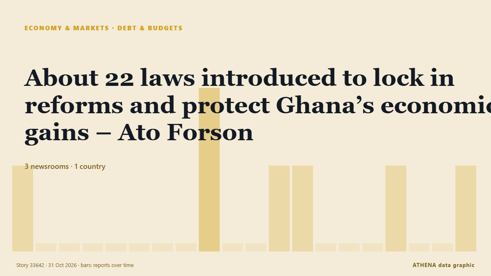

الديون والموازنات
| 18 أكتوبر | 0 |
|---|---|
| 19 أكتوبر | 2 |
| 20 أكتوبر | 0 |
| 21 أكتوبر | 0 |
| 22 أكتوبر | 0 |
| 23 أكتوبر | 0 |
| 24 أكتوبر | 0 |
| 25 أكتوبر | 0 |
| 26 أكتوبر | 2 |
| 27 أكتوبر | 4 |
| 28 أكتوبر | 6 |
| 29 أكتوبر | 4 |
| 30 أكتوبر | 6 |
| 31 أكتوبر | 0 |
تُعرض العناوين بالإنجليزية كما نُشرت.

About 22 laws introduced to lock in reforms and protect Ghana’s economic gains – Ato Forson
نشرته 3 مصادر في دولة واحدة منذ 26 أكتوبر. أول من نشره: MyJoyOnline. يقدّر ATHENA الخطر بـ0.0/10 (منعدم)، بثقة 54٪.
Penang Budget 2027 sets aside RM600 aid for e-hailing drivers, RM500 for newlyweds
GEORGE TOWN, Oct 30 — E-hailing drivers will be getting a special one-off incentive of RM600 in 2027 under the new... من Malay Mail
Anwar: CSA MPs to get constituency funds once Budget 2027 is passed
PM adds that other opposition lawmakers are welcome to join the agreement. من Malaysiakini
The OBR is clear: Not a single measure from this Budget will raise growth
This Budget was not a plan for growth or national renewal, it was a smothering pillow for the UK economy, writes Robert Jenrick. من City A.M.
Don't let Halloween scare your heart health
Halloween season is a time for scary tricks and sweet treats. من Medical Xpress
Pentagon’s US$1.5 Trillion Budget Explained
The Pentagon wants US$1.5 trillion for fiscal 2027, but US$350 billion hinges on a party-line vote. من The Rio Times
Healey warns of more ‘hard decisions’ and departmental spending cuts
The Chancellor said Cabinet colleagues would have to exert more ‘fiscal discipline’ going into next year’s spending review. من The Irish News (Belfast)
IMF Engages With Iraq on Preparing New Bailout Program
The IMF said Thursday it is engaging with Iraqi authorities to prepare a new bailout program as the war on Iran batters Iraq’s energy-dependent economy. من Kurdistan24 (English)
Martin Lewis gives key update as '£108 cut confirmed' today
Mr Lewis said he was 'pleased' with the change. من WalesOnline
Business groups call for removal of unjustified budget insertions
THIRTY-FIVE BUSIness and civil society groups on Thursday urged lawmakers to remove unjustified budget insertions from the proposed 2027 national budget and restore funding for foreign-assisted and… من BusinessWorld
Cost of Canadian Dental Care Plan exceeded budget by $1.1B in first 2 years: auditor general
While the Canadian Dental Care Plan has improved access to affordable dental care, the cost of the program exceeded projections by more than $1 billion in its first two years and confusion over how… من CBC News (alternative feed)
Budget 2026: How Chancellor John Healey will hammer the City
Chancellor has the Square Mile firmly in his sights in today’s Budget. من Evening Standard (London)
Mudenda urges Parliament to prioritise health, education in 2027 National Budget
SPEAKER of Parliament Jacob Mudenda has called for the 2027 National Budget to prioritise social services and infrastructure development, urging lawmakers to strengthen oversight of public spending… من NewZimbabwe
Budget 2026: rural drivers bearing brunt of skyrocketing fuel prices
John Healey is set to make tax-free mileage rates for nurses, care workers and self-employed people permanent. من Yorkshire Post
Will the Budget make you better or worse off? Check our calculator
Work out whether you will be a net winner or loser from John Healey’s Budget. من Evening Standard (London)
2027 State Budget approved in general terms thanks to PS abstention
With no last-minute surprises, the proposed State Budget for next year was approved, in general terms, with only the governing parties voting in favor and PS, PAN and JPP abstaining. من Portugal Resident
Britain's budget targets breathing space for households, businesses
The measures introduced involve a £2.6 billion cash payment to 20 million households. من The Business Times
California Billionaire Tax Vote Explained
California votes on 3 November on a one-time 5% tax on billionaires. من The Rio Times